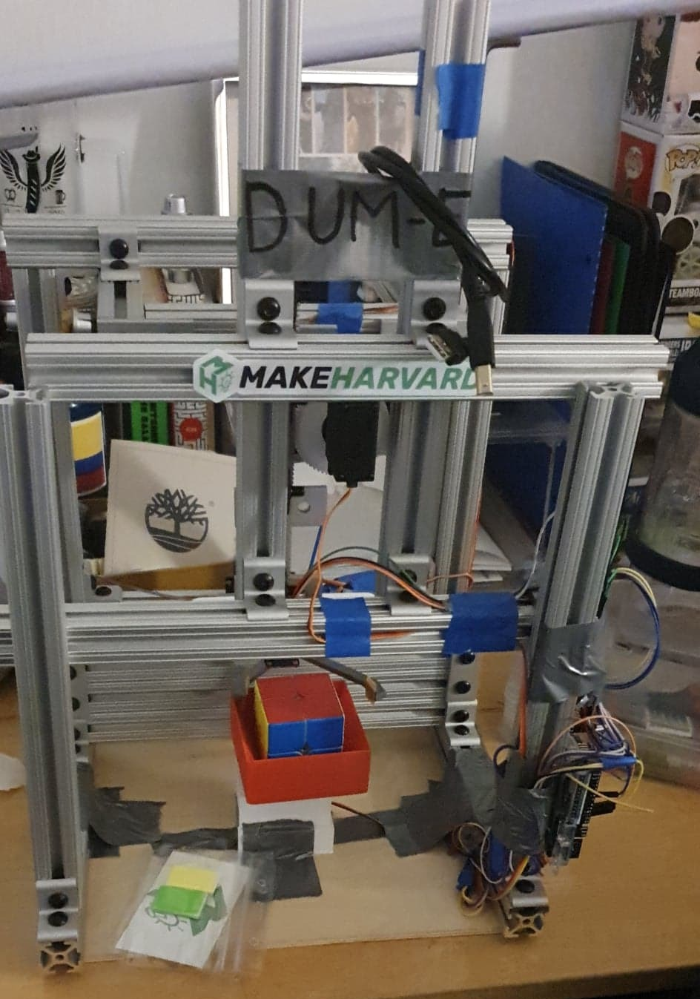

2x2 Rubik's Cube Solving Robot
This project was my group's winning submission for the 2020 MakeHarvard make-a-thon at Harvard University. For this 24-hour long event, we decided we wanted to try to make a robot that could solve a 2x2x2 Rubik's cube without external input. The idea was to have a color sensor figure out the cube state, relay that information to a solver, and then execute the resulting sequence of moves. While my teammates tackled the hardware and firmware aspects of this project, I worked on writing the program that would take a scrambled state from the Arduino, generate the moves needed to solve the cube, and send them back to the Arduino so it could move the robot's motors accordingly.
My initial approach to this was to pre-process every possible state of the cube and link each state to the sequence of moves needed to reverse the scramble. I did this by essentially creating a tree that started at the solved state, and for each node in a queue, it created children nodes that represented the resulting state of each possible move. These children were then added to the queue if that state hadn't already been seen. Each state was stored in a dictionary that pointed to each state's respective nodes. The theory was that, once the program finished processing, solving any state could be done in almost constant time as the program would only have to reverse the path back to the head node. That being said, there was one major issue with this approach. I vastly underestimated the number of states the program would have to process. So, after 14 hours of this program running without completing, I scrapped it and started over.
Alright round two. With around 9 hours of the event left, I was scrambling (pun intended) to get this done so I took a page out of the book of speedcubing. There is a popular method of solving a 2x2 called the Ortega method. It is very fast but has a lot of algorithms for a human to remember. This made it ideal for my software as I could just write all of said algorithms into the software. After a few hours of programming and debugging, the program worked! The hardest part was over. From there it was just a matter of making the Arduino and Python code talk to each other which was accomplished using a Serial connection.
Even after the event, I was not satisfied with my solving program so I eventually revisited it in an effort to make it faster and more efficient. That project can be found here.
Check out our MakeHarvard submission page here.